Considere o problema de valor inicial dado por
 ,
,  ,
,  ,
,  ,
,  ,
,  , com erro da ordem de
, com erro da ordem de  ,
,  ,
,  ,
,  , 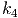, 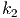, com erro da ordem de 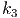>>>>>> 62bea6a0d0a1d3eca740d93a452697554da972de
O (h ) " class="math" >,
ou seja,
, 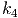, 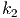, com erro da ordem de 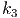>>>>>> 62bea6a0d0a1d3eca740d93a452697554da972de
O (h ) " class="math" >,
ou seja,
 | (9.8) |
para cada função analítica 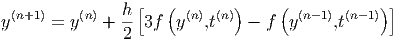, dizemos que o método tem erro de truncamento
da ordem de 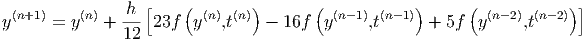 ou ordem de precisão 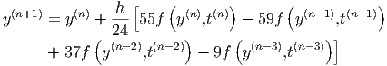. Essa afirmação faz sentido
quando fazemos a seguinte análise informal: para aproximar  , acumulamos
erros da ordem
, acumulamos
erros da ordem  , para calcular
, para calcular  acumulamos os erros de
acumulamos os erros de  e novos
erros 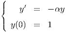. Para calcular 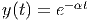, acumulamos todos os erros até 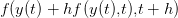, ou seja,
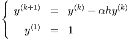 vezes 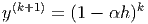. Como
e novos
erros 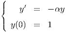. Para calcular 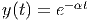, acumulamos todos os erros até 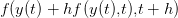, ou seja,
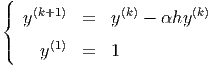 vezes 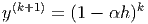. Como  , temos que os erros ao calcular
, temos que os erros ao calcular  são
da ordem
são
da ordem  . É verdade que essa análise só vale quando impomos
condições de suavidade para
. É verdade que essa análise só vale quando impomos
condições de suavidade para  e condições adequada para a expressão
e condições adequada para a expressão
 . Para explicar melhor esse pequeno texto,
=======
src="main4333x.png" alt="F (f,h, y(tn),y(tn-1),⋅⋅⋅,y0) " class="math" >. Para explicar melhor esse pequeno texto,
>>>>>>> 62bea6a0d0a1d3eca740d93a452697554da972de
fazemos em detalhes essa operação para o método de Euler na seção
9.3.1.
. Para explicar melhor esse pequeno texto,
=======
src="main4333x.png" alt="F (f,h, y(tn),y(tn-1),⋅⋅⋅,y0) " class="math" >. Para explicar melhor esse pequeno texto,
>>>>>>> 62bea6a0d0a1d3eca740d93a452697554da972de
fazemos em detalhes essa operação para o método de Euler na seção
9.3.1.
Primeiro lembramos da expressão (9.4) que origina a seguinte relação de recorrência:
Para entender melhor o motivo de na expressão (9.9) aparecer e o
método ser de precisão 1, vamos a seguinte análise informal: observemos que
e o
método ser de precisão 1, vamos a seguinte análise informal: observemos que
Todos os métodos de quadratura que vimos até o momento são da forma

![∫ b b − a
a f(x)dx ≈ [f (a ) + f (b)]-2--
= b −-af(a) + b-−-af (b)
2 2
∑2
:= w1f(x1) + w2f (x2) = wjf (xj)
j=1](main3916x.png)
![[ ( ) ]
∫ b a-+-b b-−-a
a f (x)dx ≈ f (a) + 2f 2 + f (b) 4
( )
b −-a b −-a a +-b b-−-a
= 4 f(a) + 2 f 2 + 4 f (b)
3
:= w f(x ) + w f (x ) + w f(x ) = ∑ w f(x )
1 1 2 2 3 3 j=1 j j](main3917x.png)
![[ ( ) ]
∫ b a + b b − a
f (x )dx ≈ f (a) + 4f ----- + f (b) -----
a 2 ( )6
b-−-a 2(b −-a) a-+-b b −-a
= 6 f(a) + 3 f 2 + 6 f(b)
∑3
:= wjf (xj)
j=1](main3918x.png)
![[ ( ) ( )
∫ b 3a + b a + b
f(x)dx ≈ f(a) + 4f ------- + 2f -----
a ( ) 4 ] 2
a +-3b- b −-a
+ 4f 4 + f(b) 12
( ) ( )
b-−-a b-−-a 3a-+-b- b −-a a-+-b
= 12 f (a ) + 3 f 4 + 6 f 2
( )
+ b-−-af a +-3b- + b-−-a f(b)
3 4 12
5
:= ∑ wjf (xj)
j=1](main3919x.png)
A principal técnica que temos usado para desenvolver os métodos numéricos é o polinômio de Taylor:

Integrando termo a termo, temos:

Neste momento, é natural investigar o desempenho de um esquema numérico
aplicado a funções do tipo  .
.
Definição 9.5.1. A ordem de precisão ou ordem de exatidão de um
esquema de quadratura numérica como o maior inteiro positivo n para o qual
o esquema é exato para todas as funções do tipo  com
com  , ou
seja, Um esquema é dito de ordem
, ou
seja, Um esquema é dito de ordem  se
se


 é a aproximação pelo método de Euler para o valor exato
é a aproximação pelo método de Euler para o valor exato  .
Subsequentemente, temos
.
Subsequentemente, temos 
 na passagem da segunda para terceira linha. Repetindo sucessivamente o passo
anterior, obtemos uma expressão geral para o valor exato
na passagem da segunda para terceira linha. Repetindo sucessivamente o passo
anterior, obtemos uma expressão geral para o valor exato  em termos do
valor aproximado
em termos do
valor aproximado  :
: 
 , temos
, temos  , temos ou seja, o erro entre o valor exato e o aproximado é de ordem
, temos ou seja, o erro entre o valor exato e o aproximado é de ordem  . Uma
demonstração mais formal que garante que o erro é limitado por uma expressão
que é proporcional a
. Uma
demonstração mais formal que garante que o erro é limitado por uma expressão
que é proporcional a  está discutido na seção 9.4.1.
está discutido na seção 9.4.1.
Para obter o erro de precisão do método de Euler Melhorado vamos calcular o erro de truncamento do método, ou seja, precisamos demonstrar que:
 | (9.11) |
De fato, tomando a diferença do termo da esquerda o os termos da direita, temos:

 e a equação
diferencial 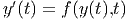>>>>>> 62bea6a0d0a1d3eca740d93a452697554da972de
y (t) = f (y (t),t) " class="math" >. Portanto,
e a equação
diferencial 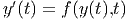>>>>>> 62bea6a0d0a1d3eca740d93a452697554da972de
y (t) = f (y (t),t) " class="math" >. Portanto, 
 :
:

Em desenvolvimento
Em desenvolvimento
Em desenvolvimento
Exemplo 9.5.3. A ordem de precisão do esquema de Simpson é 3:

Exemplo 9.5.4. Encontre os pesos  e as abscissas 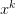 tais que o
esquema de dois pontos
e as abscissas 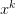 tais que o
esquema de dois pontos
Solução. Temos um sistema de quatro equações e quatro incógnitas dado por:
Da segunda e quarta equação, temos:
Esse esquema de ordem de precisão três e dois pontos chama-se quadratura de Gauss-Legendre com dois pontos:
E 9.5.1. Encontre os pesos 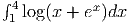, 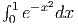 e 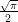 tais que o esquema de quadratura dado por
Resposta.  , 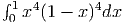, 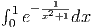. O esquema construído é o de Simpson e a ordem de exatidão é
3.
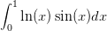
, 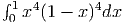, 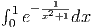. O esquema construído é o de Simpson e a ordem de exatidão é
3.
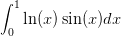
Resposta. 3

Resposta. 5
E 9.5.4. Encontre os pesos 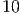, 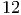 e 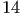 tal que o método de integração
Resposta.  com ordem 3.
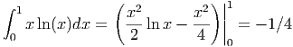
com ordem 3.
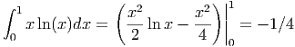
E 9.5.5. Quantos pontos são envolvidos no esquema de quadratura 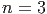? Qual a ordem do erro deste esquema de quadratura? Qual a ordem de exatidão desta quadradura?
Resposta. 5, 4, 3
>>>>>> 2ce5bba22e77a9b0d17e57fb0d2efc8029204145 id="tailmainse41.html">


 ou mais, então
ou mais, então

![∫ b b − a ∑2
f(x)dx ≈ [f(a ) + f (b)]---- = wjf (xj )
a 2 j=1](main3930x.png)
 , 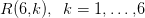 e .
, 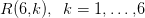 e . ![|----------|----------------|-------------|----------------|-------------------|
| | | | | |
|---f(x)---|-----Exato------|--Trapézio---|---Simpson------|Gauss-Legendre-(2)-|
| | | | | |
| | | | −1 0 1 | √ - √ - |
| | e− e− 1 | e−1 + e | e--+-4e--+-e-- | e− −-33+ e-33 |
| ex | | | 3 | |
| | ≈ 2,35040 | ≈ 3,08616 | ≈ 2,36205 | ≈ 2,34270 |
| | | | | |
|----------|----------------|-------------|----------------|-------------------|
| | | | | |
| | √ -- | | | |
| ∘ ------| 16− 4 2 | | | |
|x2 3+ x3 | 9 9 | 3,41421 | 1,13807 | 1,15411 |
| | ≈ 1,14924 | | | |
| | | | | |
|----------|----------------|-------------|----------------|-------------------|
| | | | | |
| 3 | −1 | | | |
| x2ex | e−-e3--≈ 0,78347 | 3,08616 | 1,02872 | 0,67905 |
| | | | | |
|----------|-------------------------------------------------------------------|
| |](main3954x.png)
![∫ 1 [ ( √ -) ( √ -) ]
f(x)dx ≈ 2- f −---2 + f(0) + f --2-
− 1 3 2 2](main3963x.png)